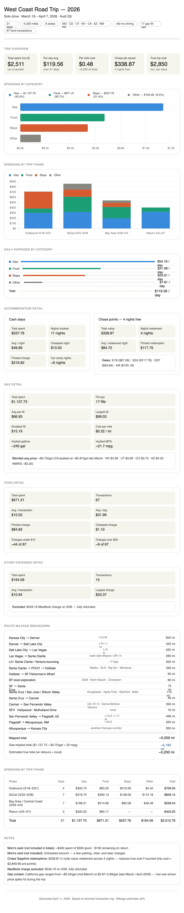

i last posted when i was chilling in the lobby at my hostel on terrible internet, like 5 mbps, and from my silly macbook neo, which I have since returned. i have arrived home and LOTS happened. gonna lean more into thoughts and realizations and less events because that isnt so fun to read back for future me.
d*****. this was NUTS. A mentally ill Russian man in desperate need for help.
TLDR: me texting this mans mother and the psych ward, and pushing it all thru Google Translate was INSANE. He kept trying to give me money and very quickly I saw that he was unwell, so I told him no. He initially approached me for help setting up his iPhone. He had a brand new iPhone whatever pro and couldn't log into iCloud. He was babbling on and on about a motorcycle accident in ******* or something. He kept speaking Russian to me like I understood, and just kept handing me his unlocked phone and flashing me ***** in USD bills in his knapsack. I agreed to help him, no compensation, on April 1 or so, so I gave him my number.
I learned that he was in the Russia x Ukraine war, saw some real nasty shit, has ptsd, was discharged, but back to the states? He tried to buy a motorbike in ******* a few weeks ago and either got scammed or denied a test ride because the OG owner saw that he was not in a clear mental state to ride, let alone OWN a motorcycle. He was at the hostel because it was probably the cheapest place to set up for a few days? But he had family in ** so idk? He also had a rental car and kept parking it illegally outside of the hostel. No idea what he did for work but he had money? He began messaging me obscenities and nonsense, thinking I was the guy from the bike interaction, or perhaps someone else? He sent me videos and messages walking around the ****** of ** at *, *, * am. I don't think he slept for DAYS. He is maybe ** something~ years old, and a ******. His Russian family is perhaps living in **, as I collected from messaging his ******. She said he was ****** and *** * ********, but the details were literally lost in translation. I fwd her all of his insane messages and said hey that's the best I can do. She kept asking me where he was or what I knew or who I was, and by all means, I tried my best to answer but ended up lacking, via translation.
I do wish him the best and I hope he gets some help. I decided not to post the messages transcript for privacy reasons but HOLY SHIT
Enough on D*****. Wish him well.
~~~
I find myself feeling paternal for the creatures of the sea, the seagulls and the water, dogs and the birdies and then I guess in addition to that probably also on the periphery of the sea or something more like a Waymo or a Coco… I feel super paternal towards those things. The Waymo just tries its best. Of course it works well, but something about it is… cute? Moreso towards the cocos. Ie, the cocos are food delivery go kart bots.
thinking about communication as a generality, everybody learned quite differently, and under slightly different pretexts.. and their own families definitely had larger effects on how people communicate, speak, and understand.. I just think about some of my closest friends and people, and how we all communicate similarly OR! differently, and obviously similar regions in geography can have similar pretenses/attitudes/beliefs, and then on the flipside, somewhere across the world like the guy I talked to from India (SHOUTOUT OM!), you know, … learns English as a second language, through a "western lens", but still probably doesn't compute 100% how someone who was born here's brain works or speaks, and have a lot more going on than just words I suppose.. but my takeaway here is that it's kind of a miracle and very cool that people from vastly different cultures, languages, and upbringings can communicate AT ALL, and it's a beautiful thing when you can find somebody that really does speak your language in a similar way.
Since seeing so many goddamn cities in the last couple weeks makes me realize that Kansas City is actually on the medium side, in terms of size. By medium, I mean that I wouldn't say larger, per my experiences, but absolutely MEDIUM!, especially compared to a lot of the stuff that exists in the northwest or just central west area. this place, as in Kansas City, is not SMALL by any means, and the metro is definitely larger? and you can feel it just driving in from the 435 to the Grandview triangle.. like damn OK we're still like 20 miles south of the city and there's just spanning suburbs and people out here.. still, I guess a place like Albuquerque, NM, doesn't really have a TRUE metro like that you just kind of pop in and pop out, but here it bleeds much more, which I'm sure is more congruent with the East Coast and what goes on over there. and all of the cities probably feel like this to some degree times 2 to 10. and then also there's a lot less in between, or the in-between really blends much more versus distinct nothingness for fucking hours (Arizona, Nevada, southern KS) and then you just kind of pop up into a small/medium city. I'm so fucking excited to be home and see Missy and sleep in my bed. God fucking damn this has been a trip. Literally.
The kc metro is just ONE place to live, I've lived in C******* for three years and the kc metro my whole life, and it is obviously home, but after basically living on the West Coast for a month, I re-enter here and I am like, oh yeah, there's things here and this is a place I COULD live, but it doesn't necessarily feel like a final home anymore or anything like that.
Crazy what a little bit of perspective and just seeing other places does your mind and how you think about things. imagine if I never left home in my entire life.. I feel this every time I travel, such as when I went to Colorado in 2016, and Montana in 2021 and 2022, San Diego twice, and Texas through the years, but this trip was a little different. Mainly because I was ALONE! This feeling, compounded with the San Diego experiences that were more personal because I was with a person that did grow up there, was just different because of more time away, and it overall felt less like a vacation, and more like a test run for what my life COULD look like. Nothing too new here, I notice I feel this way when I travel much, but something in the air about the places I saw and people I talked to that made me feel like I could actually belong far away from my default home.
Even just being back home for an hour. I have a sudden newfound sense of not wanting to be here or stay here, it's comfortable, sure, but it's not where I'm actually at or where I want to be, my living situations / options here feel like steps backward and limiting, but maybe that's the truth of trying to live in your hometown at 23, and of course my parents are at very different spots than I. They do their best, and are happy, to my understanding. but I'm not there and I need to get the fuck out of here pretty much as soon as possible.
East coast trip in the cannon… and post trip post soon.
